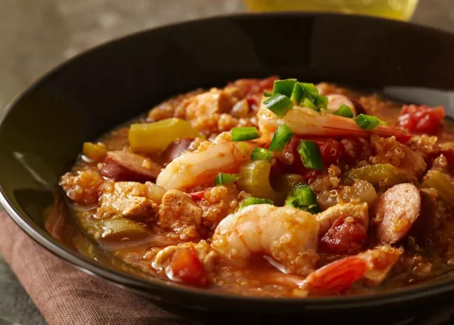

A spicy jambalaya with chicken, andouille sausage, rice, and Cajun seasonings that's easy to make in one pot.
This jambalaya recipe is savory, spicy, and oh-so satisfying. The Allrecipes community can't get enough of the top-rated jambalaya — it has earned more than 1,000 rave reviews from happy home cooks.
Jambalaya is a one-pot dish that's made with rice, meat or seafood, and vegetables. With French and Spanish influences, jambalaya is quite similar to paella. The name "jambalaya" likely comes from the Provençal word "jambalaia," which means mishmash.
Like many Cajun and Creole foods, jambalaya starts with the Cajun holy trinity: a flavor base of onion, bell peppers, and celery.